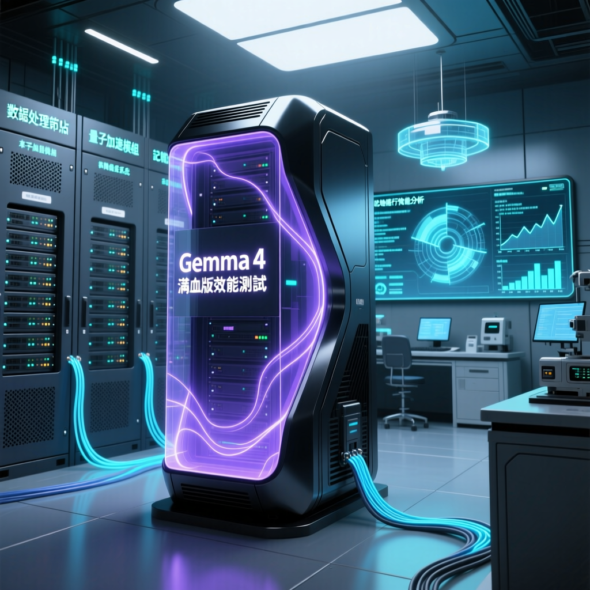

本次報告揭示了Gemma 4在本地執行時的真實效能表現，並透過實際測試資料來評估其效能。研究指出，儘管Gemma 4在理論上具有強大的能力，但在消費級硬體上的表現卻遠不如預期。

隨著Gemma 4（簡稱G4）的釋出，市場上充斥著大量關於其效能和應用的討論。本次報告旨在揭示G4在本地執行時的真實體驗，並透過實際測試資料來評估其效能表現。研究指出，儘管G4在理論上具有強大的能力，但在消費級硬體上的表現卻遠不如預期。專家分析認為，消費者在考慮購買相關裝置前應謹慎評估其實際需求和成本效益。
根據本次報告的測試結果，G4在本地執行時的表現並未達到市場宣傳的效果。首先，我們分別測試了G4的31B和26B版本。31B版本被稱為“滿血版”，但實際上，在消費級GPU如RTX 4090和5090上執行時，其反應速度和推理能力均不如預期。資料顯示，即使是配備32GB視訊記憶體的雙RTX 5090，模型在處理簡單問題如“今天天氣如何”時，也需要近三分鐘才能回應。
模型的上下文視窗大小對其表現有重要影響。研究指出，G4的上下文視窗大小為131K，這意味著它能夠處理較長的文字輸入。然而，實際測試中發現，過大的上下文視窗會導致系統資源的大量消耗，從而降低整體效率。例如，在測試過程中，當模型需要呼叫多個工具來完成任務時，其反應速度明顯下降，甚至出現卡頓現象。
未來，隨著技術的不斷進步，語言模型的本地執行能力有望得到進一步提升。然而，目前對於大多數消費者而言，使用雲端服務仍然是更為可行的選擇。業界觀察認為，硬體廠商和軟體開發商應共同努力，提高本地執行的效能和效率，以滿足更多使用者的需求。同時，消費者在選擇相關產品時，應充分考慮自身的實際需求和成本效益，避免盲目跟風。